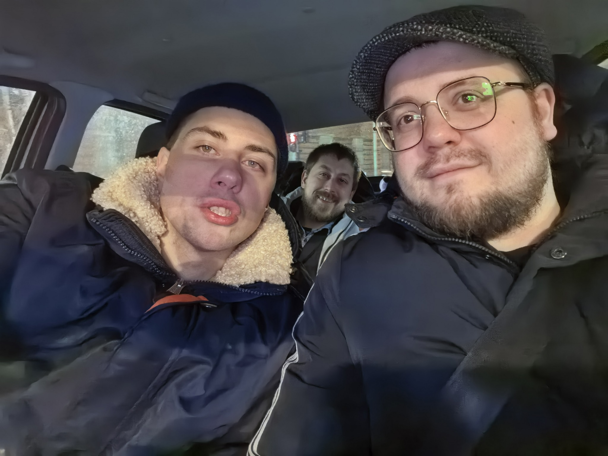
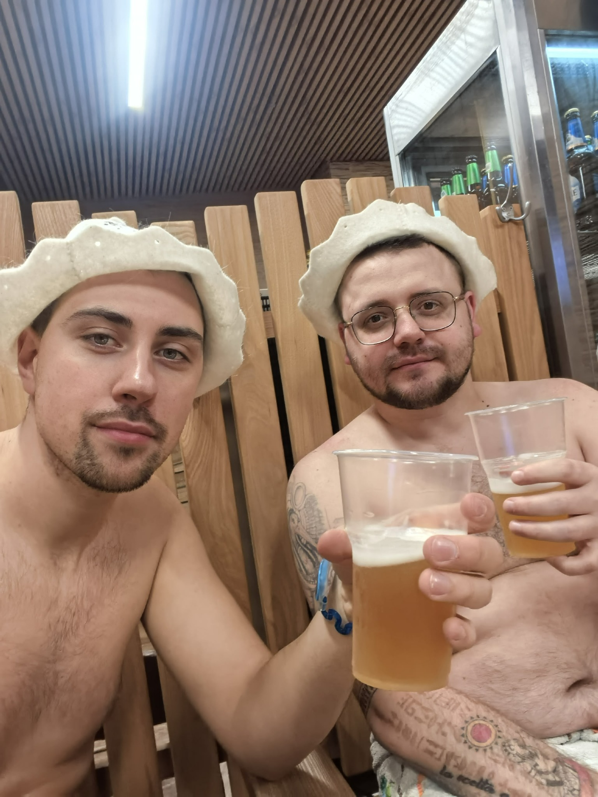
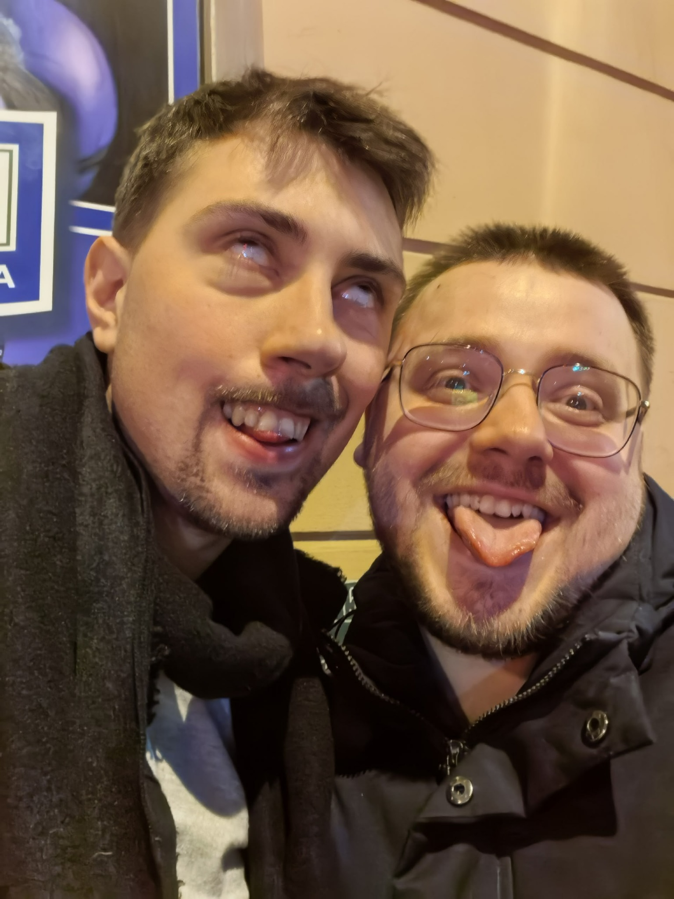
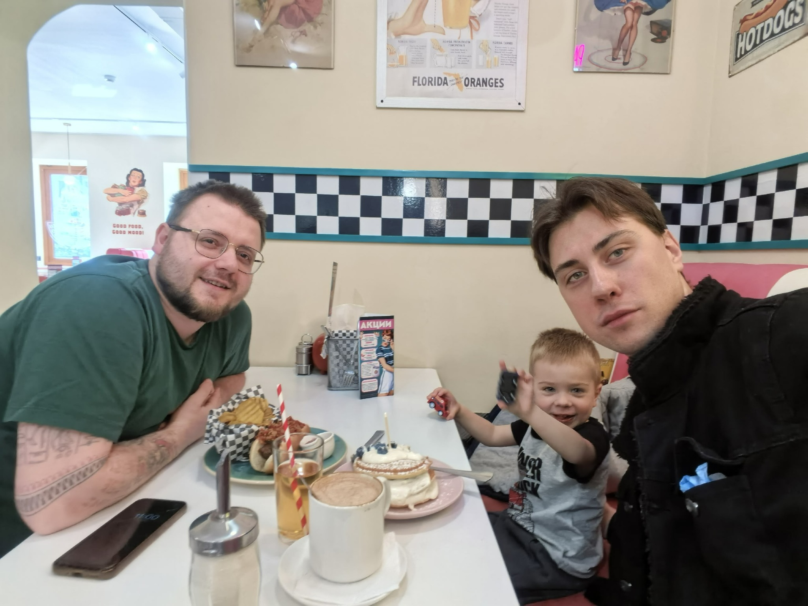
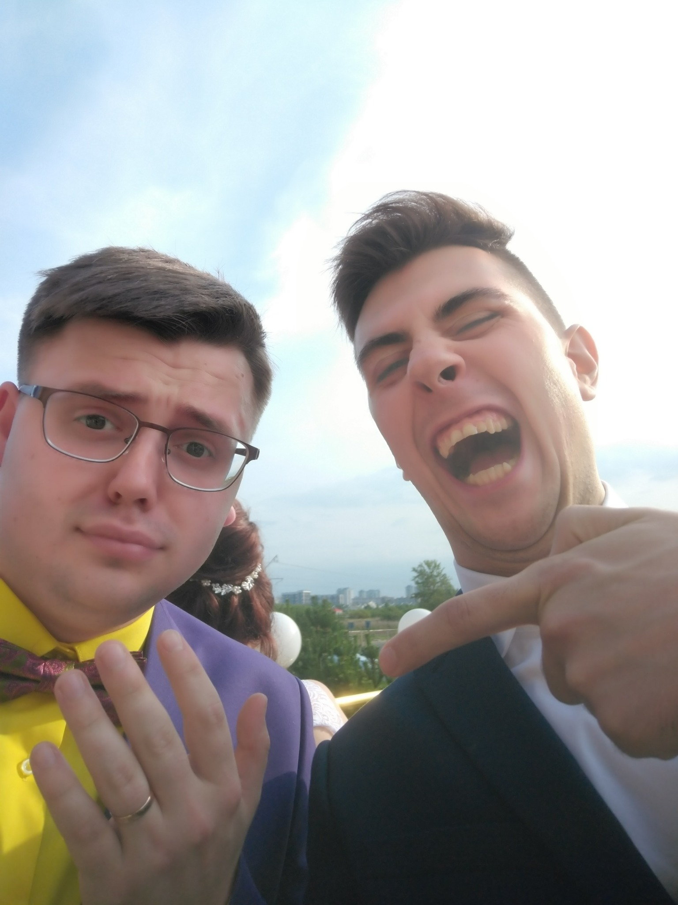
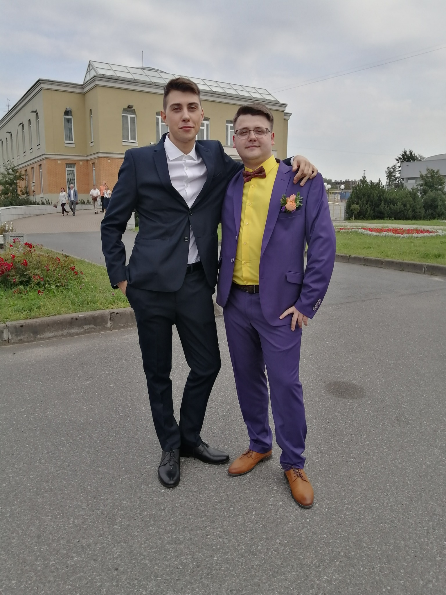
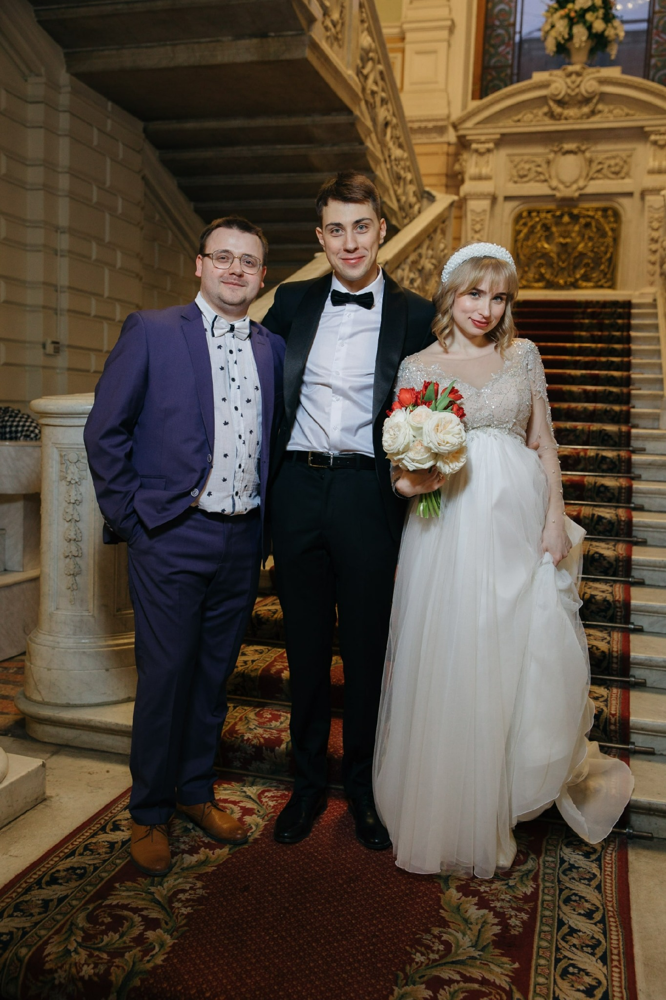
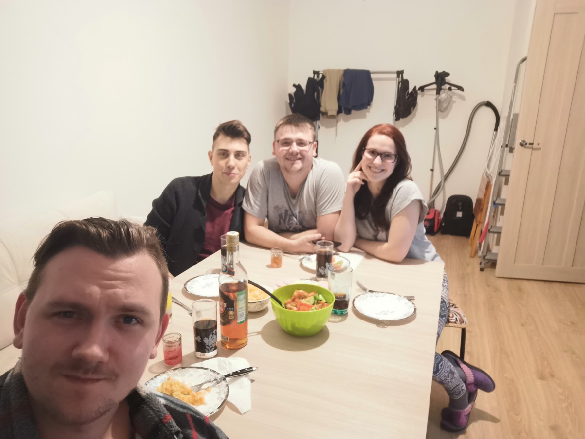
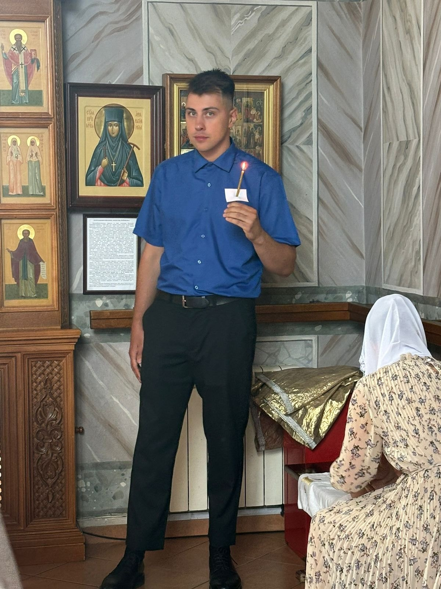

СЕКРЕТНОЕ ДОСЬЕ // УРОВЕНЬ ДОПУСКА: БРАТАН
КОСТЯ 33
ВЫЖИЛ ВОПРЕКИ ВСЕМУ
≈ 2007 ГОД / САНКТ-ПЕТЕРБУРГ
КАШТАНКА
Обычная лавочка. Общий знакомый совершает поступок, последствия которого никто тогда не способен оценить.
Два малолетних долбоёба знакомятся на лавочке. Пока что ничего особенного не происходит.
ЭТО НЕНАДОЛГО.
● ДОСТУП ОГРАНИЧЕН
ПАДИК
Кто имеет право находиться в данном помещении?
ОЖИДАНИЕ ОТВЕТА_
ВНИМАНИЕ: ОБНАРУЖЕНА ЭВОЛЮЦИЯ
ЦИВИЛИЗАЦИЯ




ПОБОЧНЫЙ КВЕСТ
СТАНДАРТНЫЙ ВЕЧЕР С БРАТАНОМ
УРОВЕНЬ 1 / 3
ПИВО
+10 к настроению
+5 к разговорам о жизни
НЕОЖИДАННЫЙ СЮЖЕТНЫЙ ПОВОРОТ
МЫ НАЧАЛИ ВЗРОСЛЕТЬ
А потом произошло то, чего никто не ожидал.



МЫ, БЛЯДЬ, ВЗРОСЛЫЕ

Когда-то всё было очень просто. Мы жили напротив друг друга. Чтобы встретиться, достаточно было выйти из дома.
Каштанка. Падик. Потом бары. И казалось, что времени дохуя.
А потом появились семьи. Работа. Дети.
ЦЕНТРСТЁПА
КОЛПИНО
Теперь, чтобы просто встретиться, должны совпасть примерно семнадцать обстоятельств и расположение планет.

Когда-то ты был просто пацаном из дома напротив.
Потом корешем.
Потом одним из моих лучших друзей.
А спустя столько лет…
ТЫ СТАЛ КРЁСТНЫМ МОЕЙ ДОЧЕРИ.
Наверное, лучше объяснить, что для меня значит слово «братан», уже и не получится.
ФИНАЛЬНАЯ ДИАГНОСТИКА
КОНСТАНТИН v33.0
⚠ ЗНАЧЕНИЕ «КРАСАВЧИК» ВЫХОДИТ ЗА ПРЕДЕЛЫ ДОПУСТИМОГО ДИАПАЗОНА.
ПОМОЖЕТ ДРУГУ ✓
ПОПРОСИТ ПОМОЩИ САМ ЗАГРУЗКА...
ОТВЕТИТ СТЁПЕ СРАЗУ ✕
КРИТИЧЕСКИЙ БАГ ОБНАРУЖЕН
Когда помощь нужна братану: Костя → поможет
Когда помощь нужна Косте: Костя → хрен кому позвонит
ЛИЧНОЕ СООБЩЕНИЕ // БЕЗ ПРИКОЛОВ
БРАТАН.
Тебе 33. Мы знакомы уже больше половины нашей жизни.
За это время изменилось практически всё. Мы выросли. Женились. Стали отцами. У каждого появилась своя жизнь, свои заботы и свои проблемы.
Мы уже не можем просто выйти из дома и через пару минут встретиться на Каштанке. И видимся мы сейчас намного реже, чем хотелось бы.
Но есть вещи, которые за всё это время не поменялись.
Я знаю, что если мне действительно будет нужна помощь — ты будешь рядом. И хочу, чтобы ты знал то же самое.
Только, сука, иногда для этого тебе придётся мне позвонить.
Не надо всегда всё вывозить самому. Для этого у тебя тоже есть братан.
Я очень рад, что почти двадцать лет назад какой-то общий кореш познакомил нас на лавочке в Каштанке. Он тогда явно не понимал, какую хуйню натворил.
А я сейчас понимаю. И ни на что бы её не поменял.
С ДНЁМ РОЖДЕНИЯ, БРАТАН. ♥
Спасибо за эти годы.
Продолжаем.